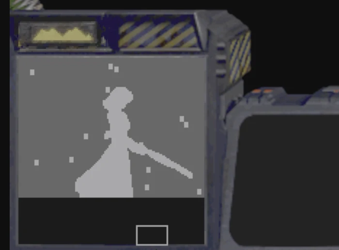
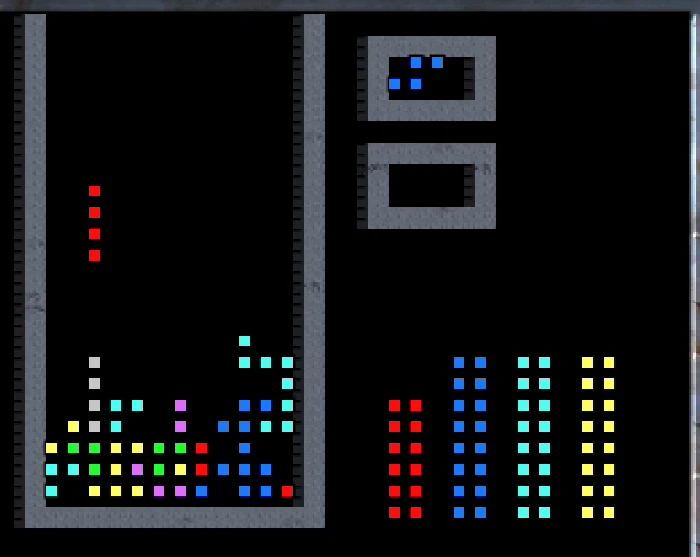
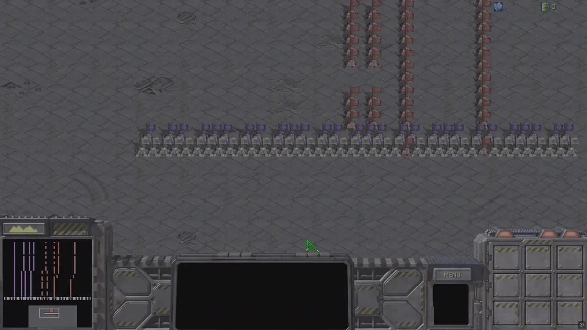
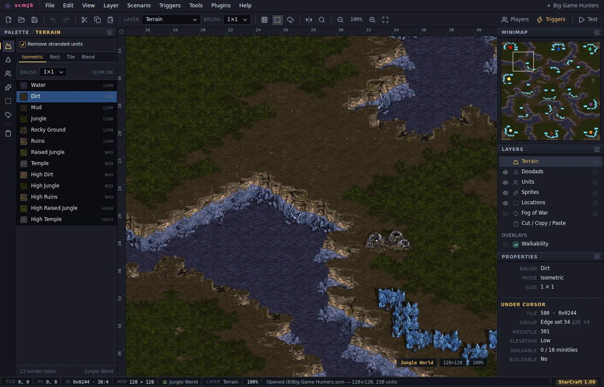

Editor
Open, edit and save maps for Brood War and StarCraft: Remastered, protected ones included. Terrain, units, triggers, and editing a map together by a link.
Works without your game files
scmJS
Free and open source, in the browser or as a desktop app for Windows, macOS and Linux. It ships no game data: the editor can fetch its graphics from Blizzard's free download, and playing requires your own StarCraft.
Open, edit and save maps for Brood War and StarCraft: Remastered, protected ones included. Terrain, units, triggers, and editing a map together by a link.
The game itself, in a tab. Play a map alone, against community bots, or with other people by a link. A mod runs with its own files and code.
Build orders, fights and graphs beside the game's own picture. Stop at any moment and play on from there, alone or against a bot.
.scm .scx .chk .rep
The file stays in this browser: it is handed to the editor or the
game in a tab of its own, and nothing is uploaded.
Beta scmJS is still under development. Back up any map you care about before you edit it.
Bug? Report it on the issue tracker. In the editor, use Help ▸ Copy Bug Report to get a log to attach to the issue.
Triggers written as TypeScript and compiled into the map, with a simulator, tests and a debugger that steps the real game.
The TrigScript guideA mod is a folder. Play it, watch its replays, and edit its data and terrain; scmjs mod builds and checks it.
Play against community BWAPI bots, bring your own, or write one in JavaScript with @scm-js/bot.
npx scmjs checks, diffs, tests and shares maps from a terminal or from CI.
Tools, panels and overlays through one API. The replay analysis and the trigger tools are plugins themselves.
Browse pluginsShare the map you have open and send the link. Everyone who opens it edits the same map at the same time.
The user guide
Bad Apple A video played on the fog of war
Falling blocks A block game with its own music
Für Elise A piece played on the game's soundsEach is a map written in TrigScript. How they were made.
The desktop app is the same editor in an Electron window. It also
updates itself (you can switch to the nightly in its preferences),
finds your StarCraft installation, and opens map files you
double-click or open with it. The app is not signed yet, so Windows
shows a SmartScreen warning, and on macOS you need to run
xattr -d com.apple.quarantine before it will start.
| Platform | Latest release | Nightly |
|---|---|---|
| Windows installer | scmJS-windows-x64-setup.exe | nightly .exe |
| Windows zip, no install | scmJS-windows-x64.zip | nightly .zip |
| macOS Apple silicon | scmJS-macos-arm64.dmg | nightly .dmg |
| macOS Intel | scmJS-macos-x64.dmg | nightly .dmg |
| Linux AppImage | scmJS-linux-x86_64.AppImage | nightly .AppImage |
| Linux Debian, Ubuntu | scmJS-linux-amd64.deb | nightly .deb |
All nightly builds are the same build as scmjs.dev/nightly. Every asset, and the notes for each version, are on the releases page.
Each numbered release is also a Docker image. To pull it and run it on your machine:
docker run --rm -p 8080:80 \
ghcr.io/scm-js/scm-js:latest
Then go to http://localhost:8080 in your browser.
Every release has a scmJS-web.zip: the built
editor as static files, with no server of its own. Unpack it
anywhere that serves files from the root.
You need Node 22.18 or newer. Clone, npm install,
then npm run dev to run the development server or
npm run build:desktop for an installer.
The tilesets, unit graphics and .dat tables belong to
Blizzard Entertainment and cannot be redistributed. On first run the
editor asks where to get them: your own StarCraft folder, or
Blizzard's free map editor download, which it can fetch for you. The
desktop app looks for your StarCraft installation by itself.
Without game data the editor still opens and edits maps, but draws them without the game's graphics.

See the user guide for documentation.
The layers, palettes and dialogs follow StarEdit and SCMDraft 2, so
the editor should feel familiar. Triggers import and export as
SCMDraft .trg files. The Text Trigger Editor (the
TrigEdit plugin, off at first) uses SCMDraft's TrigEdit syntax, so
triggers copied out of SCMDraft paste straight in.